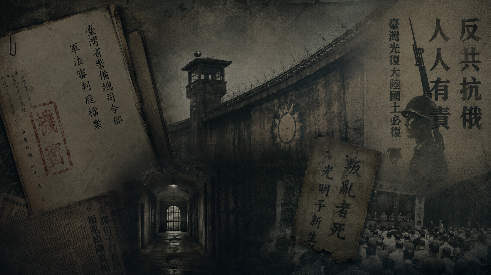

<!DOCTYPE html>
<html lang="zh-TW">
<head>
    <meta charset="UTF-8">
    <meta name="viewport" content="width=device-width, initial-scale=1.0">
    <title>台灣白色恐怖主題密室逃脫</title>
    
    <!-- 引入 React 與 ReactDOM -->
    <script src="https://unpkg.com/react@18/umd/react.production.min.js"></script>
    <script src="https://unpkg.com/react-dom@18/umd/react-dom.production.min.js"></script>
    <!-- 引入 Babel 以解析 JSX -->
    <script src="https://unpkg.com/@babel/standalone/babel.min.js"></script>
    <!-- 引入 Tailwind CSS 進行樣式設計 -->
    <script src="https://cdn.tailwindcss.com"></script>
    
    <style>
        body { margin: 0; padding: 0; background-color: #000; }
        .animate-fade-in { animation: fadeIn 1s ease-in-out forwards; }
        @keyframes fadeIn { from { opacity: 0; } to { opacity: 1; } }
    </style>
</head>
<body>
    <div id="root"></div>

    <script type="text/babel">
        const { useState, useEffect } = React;

        // --- SVG 圖示定義區 (取代外部圖示庫) ---
        const IconBase = (props) => (
            <svg xmlns="http://www.w3.org/2000/svg" width="24" height="24" viewBox="0 0 24 24" fill="none" stroke="currentColor" strokeWidth="2" strokeLinecap="round" strokeLinejoin="round" className={props.className}>
                {props.children}
            </svg>
        );

        const Book = (p) => <IconBase {...p}><path d="M4 19.5v-15A2.5 2.5 0 0 1 6.5 2H20v20H6.5a2.5 2.5 0 0 1 0-5H20"/></IconBase>;
        const Radio = (p) => <IconBase {...p}><rect x="2" y="7" width="20" height="13" rx="2"/><path d="M16 3L8 7"/><circle cx="8" cy="14" r="2"/><path d="M16 14h.01"/></IconBase>;
        const DoorClosed = (p) => <IconBase {...p}><path d="M18 20V6a2 2 0 0 0-2-2H8a2 2 0 0 0-2 2v14"/><path d="M2 20h20"/><path d="M14 12v.01"/></IconBase>;
        const FileText = (p) => <IconBase {...p}><path d="M14 2H6a2 2 0 0 0-2 2v16a2 2 0 0 0 2 2h12a2 2 0 0 0 2-2V8z"/><polyline points="14 2 14 8 20 8"/><line x1="16" y1="13" x2="8" y2="13"/><line x1="16" y1="17" x2="8" y2="17"/><polyline points="10 9 9 9 8 9"/></IconBase>;
        const PenTool = (p) => <IconBase {...p}><path d="M12 19l7-7 3 3-7 7-3-3z"/><path d="M18 13l-1.5-7.5L2 2l3.5 14.5L13 18l5-5z"/><path d="M2 2l7.586 7.586"/><circle cx="11" cy="11" r="2"/></IconBase>;
        const Search = (p) => <IconBase {...p}><circle cx="11" cy="11" r="8"/><line x1="21" y1="21" x2="16.65" y2="16.65"/></IconBase>;
        const Key = (p) => <IconBase {...p}><path d="M21 2l-2 2m-7.61 7.61a5.5 5.5 0 1 1-7.778 7.778 5.5 5.5 0 0 1 7.777-7.777zm0 0L15.5 7.5m0 0l3 3L22 7l-3-3m-3.5 3.5L19 4"/></IconBase>;
        const AlertTriangle = (p) => <IconBase {...p}><path d="M10.29 3.86L1.82 18a2 2 0 0 0 1.71 3h16.94a2 2 0 0 0 1.71-3L13.71 3.86a2 2 0 0 0-3.42 0z"/><line x1="12" y1="9" x2="12" y2="13"/><line x1="12" y1="17" x2="12.01" y2="17"/></IconBase>;
        const ArchiveIcon = (p) => <IconBase {...p}><polyline points="21 8 21 21 3 21 3 8"/><rect x="1" y="3" width="22" height="5"/><line x1="10" y1="12" x2="14" y2="12"/></IconBase>;
        const ArrowRight = (p) => <IconBase {...p}><line x1="5" y1="12" x2="19" y2="12"/><polyline points="12 5 19 12 12 19"/></IconBase>;
        const Eye = (p) => <IconBase {...p}><path d="M1 12s4-8 11-8 11 8 11 8-4 8-11 8-11-8-11-8z"/><circle cx="12" cy="12" r="3"/></IconBase>;
        const ShieldAlert = (p) => <IconBase {...p}><path d="M12 22s8-4 8-10V5l-8-3-8 3v7c0 6 8 10 8 10z"/><line x1="12" y1="8" x2="12" y2="12"/><line x1="12" y1="16" x2="12.01" y2="16"/></IconBase>;
        const ChevronRight = (p) => <IconBase {...p}><polyline points="9 18 15 12 9 6"/></IconBase>;
        const Lock = (p) => <IconBase {...p}><rect x="3" y="11" width="18" height="11" rx="2" ry="2"/><path d="M7 11V7a5 5 0 0 1 10 0v4"/></IconBase>;
        const Unlock = (p) => <IconBase {...p}><rect x="3" y="11" width="18" height="11" rx="2" ry="2"/><path d="M7 11V7a5 5 0 0 1 9.9-1"/></IconBase>;
        const Clock = (p) => <IconBase {...p}><circle cx="12" cy="12" r="10"/><polyline points="12 6 12 12 16 14"/></IconBase>;
        const FileWarning = (p) => <IconBase {...p}><path d="M14 2H6a2 2 0 0 0-2 2v16a2 2 0 0 0 2 2h12a2 2 0 0 0 2-2V8z"/><path d="M14 2v6h6"/><path d="M12 12v4"/><path d="M12 20h.01"/></IconBase>;
        // 新增控制與關卡用圖示
        const Volume2 = (p) => <IconBase {...p}><polygon points="11 5 6 9 2 9 2 15 6 15 11 19 11 5"></polygon><path d="M19.07 4.93a10 10 0 0 1 0 14.14M15.54 8.46a5 5 0 0 1 0 7.07"></path></IconBase>;
        const VolumeX = (p) => <IconBase {...p}><polygon points="11 5 6 9 2 9 2 15 6 15 11 19 11 5"></polygon><line x1="23" y1="9" x2="17" y2="15"></line><line x1="17" y1="9" x2="23" y2="15"></line></IconBase>;
        const AnchorIcon = (p) => <IconBase {...p}><circle cx="12" cy="5" r="3"></circle><line x1="12" y1="22" x2="12" y2="8"></line><path d="M5 12H2a10 10 0 0 0 20 0h-3"></path></IconBase>;
        const UsersIcon = (p) => <IconBase {...p}><path d="M17 21v-2a4 4 0 0 0-4-4H5a4 4 0 0 0-4 4v2"></path><circle cx="9" cy="7" r="4"></circle><path d="M23 21v-2a4 4 0 0 0-3-3.87"></path><path d="M16 3.13a4 4 0 0 1 0 7.75"></path></IconBase>;

        // --- 資料定義區 ---
        const CONTENT_WARNING = `
【內容警告 Content Warning】
本遊戲題材涉及台灣白色恐怖時期（1949-1987）之歷史背景。
遊戲內容包含政治迫害、思想審查、逮捕審訊與監禁等情節。
雖為虛構角色且未影射特定真實人物，但歷史的沉重可能引發部分玩家不適。
請斟酌遊玩。
        `;

        const LEVELS = [
          {
            id: 0,
            title: "序章：塵封的檔案",
            type: "narrative",
            theme: "現代檔案室",
            bg: "bg-slate-100",
            textClass: "text-slate-800",
            text: "你是國家檔案局的一名年輕研究員。今天，你獲准開啟一份代號為「青鳥」的解密檔案。檔案的主人是一名在1950年代失蹤的年輕教師。隨著你翻開泛黃的卷宗，紙張上的文字彷彿將你拉回了那個窒悶的年代……",
            buttonText: "翻開檔案"
          },
          {
            id: 1,
            title: "第一關：暗夜叩門",
            theme: "家中／宿舍",
            bg: "bg-amber-900",
            vignette: "shadow-[inset_0_0_150px_rgba(0,0,0,0.9)]",
            intro: "1953年，夏夜。外頭傳來急促的狗吠聲與吉普車引擎聲。腳步聲停在你的門前……",
            hotspots: [
              { id: 'book', x: 25, y: 40, icon: Book, label: "書桌底部", clue: "你發現一本被藏起來的《唯物史觀》。在當下，這是絕對的「禁書」。", item: "禁書" },
              { id: 'radio', x: 75, y: 55, icon: Radio, label: "老收音機", clue: "收音機正重播著『臺灣省戒嚴令』的廣播，提醒著所有人切勿以身試法。", item: null },
              { id: 'door', x: 50, y: 70, icon: DoorClosed, label: "大門", clue: "門外傳來粗暴的敲門聲：「開門！查戶口！」", item: null, triggerPuzzle: true }
            ],
            puzzle: {
              type: "choice",
              question: "憲兵即將破門而入。為了自保，你現在最應該怎麼做？",
              options: [
                "帶著《唯物史觀》從後窗逃跑",
                "將《唯物史觀》丟入火爐燒毀",
                "立刻開門並交出收音機"
              ],
              correct: 1,
              failText: "你猶豫了。門被踹開，憲兵立刻搜出了禁書，你被粗暴地押走。",
              successText: "你顫抖著將書燒毀。雖然沒有物證，但憲兵仍以「涉嫌知情不報」為由，將你蒙上眼睛帶走。"
            },
            archive: {
              title: "歷史檔案：戒嚴令與思想審查",
              content: "1949年發布的《臺灣省戒嚴令》，開啟了長達38年的戒嚴時期。在此期間，人民的言論、出版自由受到嚴格限制。警備總部查禁了大量「左傾」、「附匪」或批評時政的書籍。持有禁書、收聽敵台廣播，都可能成為被羅織入罪的理由。告密文化的滲透，讓家不再是安全的避風港。"
            }
          },
          {
            id: 2,
            title: "第二關：欲加之罪",
            theme: "拘留所",
            bg: "bg-slate-800",
            vignette: "shadow-[inset_0_0_200px_rgba(0,0,0,0.95)]",
            intro: "你被關在一個潮濕的拘留室。不知道過了幾天，你想弄清楚自己到底犯了什麼罪。",
            hotspots: [
              { id: 'wall', x: 30, y: 45, icon: PenTool, label: "牆上刻字", clue: "牆上有前人留下的血書：「二條一...必死無疑...」", item: "神秘刻字" },
              { id: 'paper', x: 65, y: 80, icon: FileText, label: "地上的公文碎屑", clue: "碎屑上勉強能辨識出幾個字：「...懲治叛亂...條例...」", item: "公文碎屑" }
            ],
            puzzle: {
              type: "choice",
              question: "結合牆上的刻字與公文碎屑，你想起了一部令人聞風喪膽的特別法。這部法律的名稱是？",
              options: [
                "中華民國刑法",
                "懲治叛亂條例",
                "檢肅流氓條例"
              ],
              correct: 1,
              failText: "不對，如果是普通的刑法，不可能有這麼重的肅殺之氣...",
              successText: "你想起來了。那是《懲治叛亂條例》。一旦被冠上這條罪名，尤其是第二條第一項，唯一的判決就是死刑。"
            },
            archive: {
              title: "歷史檔案：懲治叛亂條例",
              content: "1949年施行的《懲治叛亂條例》是白色恐怖時期最嚴苛的法律之一。該條例架空了普通刑法，大幅擴張「叛亂罪」的解釋空間。其中著名的「二條一」（第二條第一項）規定，凡犯刑法第一百條第一項（內亂罪）等罪者，唯一死刑。許多無辜或僅是參與讀書會的知識分子，皆因此條款喪生。"
            }
          },
          {
            id: 3,
            title: "第三關：白熾燈下",
            theme: "審訊室",
            bg: "bg-zinc-900",
            vignette: "shadow-[inset_0_0_300px_rgba(0,0,0,1)]",
            intro: "強烈的探照燈直射你的眼睛。審訊官將一份自白書摔在桌上，要求你立刻簽名。",
            hotspots: [
              { id: 'light', x: 50, y: 20, icon: Eye, label: "探照燈", clue: "刺眼的燈光讓你連續三天無法入睡，精神瀕臨崩潰。", item: null },
              { id: 'confession', x: 40, y: 60, icon: FileWarning, label: "自白書", clue: "上面寫著：「本人於民國42年5月10日，參加反動集會...」", item: "自白書草稿" },
              { id: 'pocket', x: 70, y: 65, icon: Search, label: "自己的口袋", clue: "你摸到一張被揉爛的醫院收據，日期是「民國42年5月8日至5月15日，住院隔離治療中」。", item: "醫院收據" }
            ],
            puzzle: {
              type: "choice",
              question: "審訊官怒吼：「簽字！供出你的同黨，就能從輕發落！」此時你發現自白書上的致命破綻，你決定？",
              options: [
                "屈打成招，簽下自己的名字",
                "指出5月10日自己正在醫院隔離，不可能參加集會",
                "保持沈默，一語不發"
              ],
              correct: 1,
              failText: "你選擇了這條路。但在那個年代，簽字不代表寬恕，沈默則代表默認。他們會繼續折磨你直到拿到想要的答案。",
              successText: "你拿出收據指出矛盾。審訊官愣了一下，雖然惱羞成怒地將你毒打一頓，但這份充滿破綻的自白書暫時無法作為起訴依據。"
            },
            archive: {
              title: "歷史檔案：疲勞審訊與自白書",
              content: "為了羅織罪名，當時的特務機關常採用不人道的刑求與疲勞審訊（如長時間強光照射、剝奪睡眠）來逼取口供。許多案件的「自白書」是由辦案人員預先寫好，再強迫受害者簽名蓋指印。「認罪換從輕」往往是審訊者的謊言，許多人在受不了酷刑簽字後，換來的仍是死刑或無期徒刑。"
            }
          },
          {
            id: 4,
            title: "第四關：荒謬的判決",
            theme: "軍事法庭",
            bg: "bg-gray-900",
            vignette: "shadow-[inset_0_0_200px_rgba(0,0,0,0.95)]",
            intro: "經歷漫長的關押，你終於來到了軍事法庭。這是一場沒有陪審團、律師也形同虛設的審判。",
            hotspots: [
              { id: 'judge', x: 50, y: 20, icon: Lock, label: "法官席", clue: "軍法官面無表情，甚至沒有抬頭看你一眼。", item: null },
              { id: 'evidence', x: 30, y: 60, icon: FileText, label: "呈堂證供", clue: "檢方出示的唯一證據，是那份日期矛盾、且有明顯刑求血跡的自白書。", item: "血跡證供" },
              { id: 'verdict', x: 70, y: 60, icon: FileWarning, label: "判決書（不慎露出的草稿）", clue: "你瞥見書記官桌上的判決書，上面的判決結果已經用紅筆批示了，但審判才剛開始！", item: "預立判決" }
            ],
            puzzle: {
              type: "choice",
              question: "面對這場審判，你意識到了最殘酷的真相是什麼？",
              options: [
                "只要我據理力爭，法官就會發現證據不足",
                "這是一場表演，判決早已在高層批示時決定",
                "只要我表現出悔意，就能獲得減刑"
              ],
              correct: 1,
              failText: "你還對體制抱持著幻想。但當法官宣判時，你才明白一切都是徒勞。",
              successText: "你痛苦地閉上雙眼。原來，證據的真偽、法庭的辯論，都只是走個過場。你的命運，早已在某張公文的紅字批示中被註定了。"
            },
            archive: {
              title: "歷史檔案：軍法審判與總統批示",
              content: "戒嚴時期的政治案件皆由軍事法庭審理，缺乏正當法律程序保障。許多案件的判決結果並非由法官依證據獨立審判，而是受到高層軍政官員甚至總統的直接干預。歷史檔案中常見總統以紅筆在判決書上批示「判處極刑可也」或「發還嚴為復審」（暗示加重刑度），凸顯了當時司法體制的不公與人治色彩。"
            }
          },
          {
            id: 5,
            title: "第五關：黑暗的船艙",
            theme: "移送船艙",
            bg: "bg-cyan-900",
            vignette: "shadow-[inset_0_0_200px_rgba(0,0,0,0.95)]",
            intro: "判決確定後，你與數十名政治犯被趕上了一艘前往未知島嶼的登陸艦。船艙內悶熱、擁擠，伴隨著海浪的顛簸，充滿了絕望的氣息。",
            hotspots: [
              { id: 'chains', x: 50, y: 75, icon: Lock, label: "腳鐐", clue: "沉重的腳鐐將你與旁邊的人銬在一起，每動一下都會磨破皮膚。", item: null },
              { id: 'crack', x: 20, y: 30, icon: Eye, label: "艙壁縫隙", clue: "透過縫隙，你看到外面的海水與漸漸遠離的台灣本島...", item: null },
              { id: 'inmate', x: 75, y: 60, icon: UsersIcon, label: "暈船的難友", clue: "旁邊一位年輕學生因為恐懼和嚴重的暈船，正忍不住痛苦地啜泣著。", item: "難友的眼淚", triggerPuzzle: true }
            ],
            puzzle: {
              type: "choice",
              question: "年輕難友的哭泣聲引起了持槍看守的不滿，看守走過來準備動手。在戴著手銬腳鐐的情況下，你會怎麼做？",
              options: [
                "假裝不認識他，把頭撇過去避免惹麻煩",
                "輕聲唱起家鄉的歌謠，試圖安撫他的情緒與恐懼",
                "大聲對看守咆哮，抗議他們的不人道對待"
              ],
              correct: 1,
              failText: "看守粗暴地將他踹倒。在那一刻，恐懼不僅吞噬了他，也吞噬了你們之間的連繫。",
              successText: "你用微弱但堅定的聲音哼唱著。看守愣了一下，雖然斥責了幾句，但沒有動手。年輕人逐漸平靜下來，在黑暗中握緊了你的手。"
            },
            archive: {
              title: "歷史檔案：登陸艦與移監",
              content: "許多被判處有期徒刑的政治犯，在軍法處判決確定後，會被送往基隆港，押上俗稱「開口笑」的海軍登陸艦移送綠島。航程中，受難者常被銬在一起，擠在悶熱惡臭的底艙，忍受嚴重的暈船與對未知的恐懼。許多人在這趟航程中，第一次意識到自己可能將長久與故鄉訣別。"
            }
          },
          {
            id: 6,
            title: "第六關：孤島微光",
            theme: "火燒島牢房",
            bg: "bg-stone-800",
            vignette: "shadow-[inset_0_0_150px_rgba(0,0,0,0.9)]",
            intro: "船隻靠岸，你被移送到了遙遠的火燒島（綠島）。在擁擠的牢房中，你試圖與外界或隔壁牢房取得聯繫。",
            hotspots: [
              { id: 'window', x: 50, y: 30, icon: Clock, label: "鐵窗", clue: "窗外只能看見灰暗的海。你已經算不清自己在這裡待了幾天。", item: null },
              { id: 'wall_knock', x: 80, y: 50, icon: ShieldAlert, label: "隔層牆壁", clue: "夜深時，隔壁傳來規律的敲擊聲：叩、叩叩、叩叩叩...", item: "敲擊密碼" },
              { id: 'bowl', x: 20, y: 80, icon: ArchiveIcon, label: "飯碗底下", clue: "飯碗底層藏了一張防水的紙條：「密碼是我們失去自由的年份（西元）。」", item: "紙條" }
            ],
            puzzle: {
              type: "choice",
              question: "隔壁獄友似乎在等待你用敲擊聲回覆一個關鍵年份，以確認你是自己人。那是哪一年（戒嚴令頒布那年）？",
              options: [
                "1945",
                "1947",
                "1949"
              ],
              correct: 2,
              failText: "隔壁的敲擊聲停止了，你失去了建立聯繫的機會。",
              successText: "你輕敲出 1-9-4-9。隔壁傳來了兩聲沉穩的回敲。在這個與世隔絕的孤島上，你終於感受到一絲團結的微光。"
            },
            archive: {
              title: "歷史檔案：綠島與政治犯生活",
              content: "綠島（舊稱火燒島）是白色恐怖時期關押政治犯的著名地點之一。被判處有期徒刑的受難者被集中於此進行服刑。在嚴密監視下，獄友們仍會透過各種秘密方式（如敲牆密碼、傳遞小紙條）互通消息、互相扶持，展現了極高的精神韌性與互助精神。"
            }
          },
          {
            id: 7,
            title: "第七關：思想勞役",
            theme: "新生訓導處",
            bg: "bg-emerald-900",
            vignette: "shadow-[inset_0_0_150px_rgba(0,0,0,0.9)]",
            intro: "在島上，除了在海邊打石、建牆的繁重勞動，最痛苦的是無止盡的「政治課」。他們稱呼你們為「新生」，試圖徹底改造你們的思想。",
            hotspots: [
              { id: 'hoe', x: 30, y: 70, icon: AnchorIcon, label: "打石工具", clue: "沉重的鐵鎚與鑿子。許多難友的手上長滿了厚繭與水泡。", item: null },
              { id: 'banner', x: 50, y: 20, icon: AlertTriangle, label: "政治標語", clue: "牆上掛著巨大的布條：「反共抗俄」。", item: null },
              { id: 'notebook', x: 70, y: 60, icon: PenTool, label: "心得筆記本", clue: "長官發下筆記本，要求所有人今晚交出對「過去錯誤思想」的深刻反省。", item: "空白筆記本", triggerPuzzle: true }
            ],
            puzzle: {
              type: "choice",
              question: "面對強制撰寫的「反省心得」，你該如何在審查中過關，同時又不違背良心傷害難友？",
              options: [
                "痛罵自己，並編造隔壁難友的假罪證交差",
                "拒絕寫下任何一個字，以沉默表達最嚴厲的抗議",
                "使用空泛的官方口號與八股文，敷衍填滿版面"
              ],
              correct: 2,
              failText: "在極權體制下，這種做法立刻為你或他人招來了更嚴厲的懲罰，甚至被送回台北面臨二度審判。",
              successText: "你寫滿了長官愛看的空洞口號。雖然感到無奈，但這是在夾縫中保護自己與同志生存下去的必要偽裝。"
            },
            archive: {
              title: "歷史檔案：思想改造與再叛亂案",
              content: "在新生訓導處，管理當局常要求政治犯撰寫自白書、心得報告，以評估其「思想改造」的成效。許多難友為求生存，學會了用八股文敷衍審查。然而，當局也常以此為由羅織罪名。曾有難友因私下傳遞紙條或拒絕配合，被構陷為「獄中再叛亂案」，遭到二度審判甚至死刑。"
            }
          },
          {
            id: 8,
            title: "終章：未竟的真相",
            type: "narrative",
            theme: "現代檔案室",
            bg: "bg-slate-50",
            textClass: "text-slate-800",
            text: "螢幕上的檔案到此戛然而止。那名年輕教師在綠島度過十幾年的青春後，最終雖然獲釋，卻終生背負著「政治犯」的標籤。\n\n你深吸了一口氣，看向窗外車水馬龍的台北街頭。半個世紀過去了，這座城市已經褪去了肅殺的顏色。但身為研究員，你知道你的工作才剛開始。\n\n這些泛黃的紙張不是為了控訴，而是為了記憶。因為唯有直視黑暗，我們才能真正擁抱光明。",
            buttonText: "完成解密 (結束遊戲)"
          }
        ];

        // --- 組件區 ---

        // 打字機效果 Hook
        const useTypewriter = (text, speed = 30) => {
          const [displayedText, setDisplayedText] = useState('');
          const [isTyping, setIsTyping] = useState(false);
          const timerRef = React.useRef(null);

          useEffect(() => {
            setDisplayedText('');
            setIsTyping(true);
            let i = 0;
            timerRef.current = setInterval(() => {
              if (i < text.length) {
                setDisplayedText((prev) => prev + text.charAt(i));
                i++;
              } else {
                setIsTyping(false);
                clearInterval(timerRef.current);
              }
            }, speed);
            return () => clearInterval(timerRef.current);
          }, [text, speed]);

          const skip = () => {
            clearInterval(timerRef.current);
            setDisplayedText(text);
            setIsTyping(false);
          };

          return { displayedText, isTyping, skip };
        };

        function WhiteTerrorEscape() {
          const [gameState, setGameState] = useState('start');
          const [currentLevelIdx, setCurrentLevelIdx] = useState(0);
          const [inventory, setInventory] = useState([]);
          const [activeClue, setActiveClue] = useState('');
          const [puzzleVisible, setPuzzleVisible] = useState(false);
          const [puzzleFeedback, setPuzzleFeedback] = useState(null);
          const [canProceed, setCanProceed] = useState(false);
          
          // 新增音樂控制狀態與參考
          const [isMuted, setIsMuted] = useState(false);
          const audioRef = React.useRef(null);

          const currentLevel = LEVELS[currentLevelIdx];
          const { displayedText: typedIntro, isTyping: isIntroTyping, skip: skipIntro } = useTypewriter(currentLevel?.intro || currentLevel?.text || '', 40);
          const { displayedText: typedClue, isTyping: isClueTyping, skip: skipClue } = useTypewriter(activeClue, 20);

          const handleHotspotClick = (hotspot) => {
            setActiveClue(hotspot.clue);
            
            let newInventory = [...inventory];
            if (hotspot.item && !inventory.includes(hotspot.item)) {
              newInventory.push(hotspot.item);
              setInventory(newInventory);
            }

            // 改為點擊後滿足條件，顯示「進入抉擇」按鈕，而非強制定時器
            if (hotspot.triggerPuzzle) {
              setCanProceed(true);
            } else {
              const levelItems = currentLevel.hotspots.filter(h => h.item).map(h => h.item);
              const hasAllItems = levelItems.every(item => newInventory.includes(item));
              
              if (levelItems.length > 0 && hasAllItems && currentLevel.puzzle) {
                setCanProceed(true);
              }
            }
          };

          const handlePuzzleSubmit = (answer) => {
            const isCorrect = answer === currentLevel.puzzle.correct; // 全改為選擇題邏輯

            if (isCorrect) {
              setPuzzleFeedback({ status: 'success', text: currentLevel.puzzle.successText });
              setTimeout(() => {
                setGameState('archive');
                setPuzzleVisible(false);
                setPuzzleFeedback(null);
              }, 4000);
            } else {
              setPuzzleFeedback({ status: 'error', text: currentLevel.puzzle.failText });
              setTimeout(() => setPuzzleFeedback(null), 3000);
            }
          };

          const advanceLevel = () => {
            if (currentLevelIdx < LEVELS.length - 1) {
              setCurrentLevelIdx(currentLevelIdx + 1);
              setGameState('game');
              setInventory([]);
              setActiveClue('');
              setCanProceed(false); // 重置進行狀態
            } else {
              setGameState('end');
            }
          };

          // 處理音樂播放與遊戲開始
          const handleStartGame = () => {
            setGameState('warning');
            if (audioRef.current) {
                audioRef.current.play().catch(e => console.log("瀏覽器阻擋自動播放:", e));
            }
          };

          // 切換靜音
          const toggleMute = () => {
            if (audioRef.current) {
                audioRef.current.muted = !isMuted;
                setIsMuted(!isMuted);
            }
          };

          // 根據狀態渲染主要內容
          const renderContent = () => {
            // 0. 開始畫面 (包含背景圖與按鈕)
            if (gameState === 'start') {
              return (
                <div className="min-h-screen bg-black flex flex-col items-center justify-center relative overflow-hidden font-sans">
                  {/* 載入指定的背景圖 背景.png，改用 img 標籤確保本地中文檔名能正確讀取 */}
                  
                  
                  <div className="relative z-10 flex flex-col items-center">
                    <h1 className="text-4xl md:text-6xl font-bold text-white tracking-widest mb-12 text-center drop-shadow-2xl">
                      台灣白色恐怖主題<br/>密室逃脫
                    </h1>
                    <button 
                      onClick={handleStartGame}
                      className="px-10 py-4 bg-red-900/80 hover:bg-red-700 text-white text-xl rounded shadow-lg transition-colors border border-red-500/50 tracking-widest"
                    >
                      遊戲開始
                    </button>
                  </div>
                </div>
              );
            }

            // 1. 警告畫面
            if (gameState === 'warning') {
              return (
                <div className="min-h-screen bg-black text-white flex flex-col items-center justify-center p-6 text-center font-sans">
                  <AlertTriangle className="w-16 h-16 text-yellow-500 mb-6" />
                  <h1 className="text-2xl font-bold mb-4 tracking-widest">內容警告</h1>
                  <p className="max-w-xl text-gray-300 leading-relaxed mb-8 whitespace-pre-line text-left">
                    {CONTENT_WARNING}
                  </p>
                  <button 
                    onClick={() => {
                      setGameState('game');
                      setCurrentLevelIdx(0);
                    }}
                    className="px-6 py-3 border border-gray-500 hover:bg-gray-800 hover:text-white transition-colors duration-300 rounded tracking-widest"
                  >
                    我已了解，進入遊戲
                  </button>
                </div>
              );
            }

            // 2. 歷史檔案畫面
            if (gameState === 'archive') {
              return (
                <div className="min-h-screen bg-[#f4ebd0] text-[#3d3326] flex flex-col items-center justify-center p-6 relative overflow-hidden font-serif">
                  <div className="absolute inset-0 opacity-20 pointer-events-none" style={{ backgroundImage: 'radial-gradient(#8f7f63 1px, transparent 1px)', backgroundSize: '10px 10px' }}></div>
                  
                  <div className="max-w-2xl w-full bg-white/60 p-8 rounded shadow-lg border border-[#c4b59d] relative z-10">
                    <div className="flex items-center mb-6 border-b border-[#c4b59d] pb-4">
                      <ArchiveIcon className="w-6 h-6 mr-3 text-red-800" />
                      <h2 className="text-2xl font-bold tracking-wider">{currentLevel.archive.title}</h2>
                    </div>
                    <p className="text-lg leading-loose text-justify mb-8 whitespace-pre-line">
                      {currentLevel.archive.content}
                    </p>
                    <div className="flex justify-end">
                      <button 
                        onClick={advanceLevel}
                        className="flex items-center px-5 py-2 bg-[#3d3326] text-[#f4ebd0] hover:bg-[#2a231a] transition-colors rounded shadow"
                      >
                        進入下一篇章 <ChevronRight className="w-4 h-4 ml-2" />
                      </button>
                    </div>
                  </div>
                </div>
              );
            }

            // 3. 結局畫面
            if (gameState === 'end') {
              return (
                <div className="min-h-screen bg-white text-slate-800 flex flex-col items-center justify-center p-6 font-sans">
                  <h1 className="text-3xl font-bold mb-6 tracking-widest">歷史不會被遺忘</h1>
                  <p className="max-w-md text-center leading-relaxed text-gray-600 mb-8 whitespace-pre-line">
                    感謝您遊玩此體驗。轉型正義的道路依然漫長，真相的追尋與歷史的反思，需要我們共同傳承。
                  </p>
                  <button 
                    onClick={() => window.location.reload()}
                    className="px-6 py-2 border border-slate-800 hover:bg-slate-800 hover:text-white transition-colors rounded"
                  >
                    重新開始
                  </button>
                </div>
              );
            }

            // 4. 遊戲主畫面
            const isNarrative = currentLevel.type === 'narrative';

            return (
              <div className={`min-h-screen flex flex-col relative transition-colors duration-1000 ${currentLevel.bg} ${currentLevel.textClass || 'text-gray-200'}`}>
                
                {!isNarrative && currentLevel.vignette && (
                  <div className={`absolute inset-0 pointer-events-none z-0 ${currentLevel.vignette}`}></div>
                )}

                <div className="relative z-10 p-4 flex justify-between items-center border-b border-white/10 bg-black/20 backdrop-blur-sm">
                  <h1 className="text-xl font-bold tracking-widest">{currentLevel.title}</h1>
                  <span className="text-sm opacity-75">{currentLevel.theme}</span>
                </div>

                <div className="flex-1 relative z-10 flex flex-col">
              {isNarrative ? (
                <div className="flex-1 flex flex-col items-center justify-center p-8 max-w-3xl mx-auto text-center">
                  <p className="text-xl leading-loose mb-12 whitespace-pre-line text-justify cursor-pointer" onClick={skipIntro}>
                    {typedIntro}
                  </p>
                  {isIntroTyping ? (
                    <button 
                      onClick={skipIntro}
                      className="px-6 py-2 bg-gray-800 text-gray-300 rounded hover:text-white transition-colors flex items-center shadow mx-auto"
                    >
                      快速顯示文字
                    </button>
                  ) : (
                    <button 
                      onClick={advanceLevel}
                      className="animate-fade-in px-8 py-3 bg-slate-800 text-white rounded hover:bg-slate-700 transition-colors flex items-center shadow-lg mx-auto"
                    >
                      {currentLevel.buttonText} <ArrowRight className="ml-2 w-5 h-5" />
                    </button>
                  )}
                </div>
              ) : (
                <>
                  <div className="flex-1 relative overflow-hidden">
                    <div className="absolute top-4 left-4 text-white/50 text-sm z-20 pointer-events-none">
                      提示：點擊場景中的閃爍圖示尋找線索
                    </div>
                    <div className="absolute inset-0 flex items-center justify-center opacity-5 pointer-events-none">
                      <span className="text-9xl font-black transform -rotate-12 tracking-tighter">
                            {currentLevel.id === 3 ? "CONFESS" : currentLevel.id === 4 ? "GUILTY" : ""}
                          </span>
                    </div>

                    {currentLevel.hotspots.map((hotspot) => (
                      <button
                        key={hotspot.id}
                        onClick={() => handleHotspotClick(hotspot)}
                        className="absolute p-4 rounded-full hover:bg-white/10 transition-all group flex flex-col items-center justify-center animate-pulse hover:animate-none"
                        style={{ left: `${hotspot.x}%`, top: `${hotspot.y}%`, transform: 'translate(-50%, -50%)' }}
                      >
                            <hotspot.icon className="w-8 h-8 text-white/70 group-hover:text-white group-hover:scale-110 transition-transform drop-shadow-md" />
                            <span className="mt-2 text-xs bg-black/60 px-2 py-1 rounded opacity-0 group-hover:opacity-100 transition-opacity whitespace-nowrap">
                              {hotspot.label}
                            </span>
                          </button>
                        ))}

                        {puzzleVisible && (
                          <div className="absolute inset-0 bg-black/80 flex items-center justify-center p-4 z-50 backdrop-blur-sm">
                            <div className="bg-[#2a2a2a] p-6 rounded shadow-2xl max-w-lg w-full border border-gray-600">
                              <h3 className="text-xl font-bold mb-4 text-red-400 flex items-center">
                                <Lock className="w-5 h-5 mr-2" /> 關鍵抉擇
                              </h3>
                              <p className="mb-6 leading-relaxed text-white">{currentLevel.puzzle.question}</p>
                              
                              <div className="space-y-3">
                                {currentLevel.puzzle.options.map((opt, idx) => (
                                  <button
                                    key={idx}
                                    onClick={() => handlePuzzleSubmit(idx)}
                                    disabled={!!puzzleFeedback}
                                    className="w-full text-left p-3 rounded bg-white/5 text-white hover:bg-white/15 border border-white/10 transition-colors"
                                  >
                                    {opt}
                                  </button>
                                ))}
                              </div>

                              {puzzleFeedback && (
                                <div className={`mt-4 p-3 rounded text-white ${puzzleFeedback.status === 'error' ? 'bg-red-900/50 border border-red-500' : 'bg-green-900/50 border border-green-500'}`}>
                                  {puzzleFeedback.status === 'success' ? <Unlock className="w-5 h-5 inline mr-2 text-green-400"/> : <AlertTriangle className="w-5 h-5 inline mr-2 text-red-400"/>}
                                  {puzzleFeedback.text}
                        </div>
                      )}
                    </div>
                  </div>
                )}
              </div>

              <div className="bg-black/80 p-4 border-t border-white/10 flex flex-col md:flex-row gap-4 h-48 md:h-40">
                <div className="flex-1 bg-white/5 rounded p-4 font-serif text-lg leading-relaxed relative flex flex-col justify-between">
                  <div className="overflow-y-auto pr-2">
                    {activeClue ? (
                      <p className="text-yellow-100/90 cursor-pointer" onClick={skipClue}>{typedClue}</p>
                    ) : (
                      <p className="text-gray-300 cursor-pointer" onClick={skipIntro}>{typedIntro}</p>
                    )}
                  </div>
                  
                  <div className="flex justify-end mt-2 shrink-0">
                    {(activeClue && isClueTyping) || (!activeClue && isIntroTyping) ? (
                      <button onClick={activeClue ? skipClue : skipIntro} className="text-sm text-gray-500 hover:text-gray-300 transition-colors">
                        ▶ 快速顯示
                      </button>
                    ) : null}

                    {canProceed && !puzzleVisible && (
                      <button 
                        onClick={() => setPuzzleVisible(true)} 
                        className="px-4 py-2 bg-red-900/80 hover:bg-red-700 text-white text-sm rounded shadow flex items-center animate-bounce ml-auto"
                      >
                        進入抉擇 <ArrowRight className="ml-2 w-4 h-4" />
                      </button>
                    )}
                  </div>
                </div>

                <div className="w-full md:w-1/3 bg-white/5 rounded p-3 flex flex-col">
                          <span className="text-xs text-gray-400 mb-2 uppercase tracking-widest border-b border-gray-600 pb-1">線索與物品</span>
                          <div className="flex flex-wrap gap-2 overflow-y-auto">
                            {inventory.length === 0 ? (
                              <span className="text-sm text-gray-600 italic">尚未收集到任何線索</span>
                            ) : (
                              inventory.map((item, idx) => (
                                <div key={idx} className="bg-white/10 px-3 py-1 rounded text-sm text-gray-200 border border-white/20 flex items-center">
                                  <Key className="w-3 h-3 mr-2 opacity-50" />
                                  {item}
                                </div>
                              ))
                            )}
                          </div>
                        </div>
                      </div>
                    </>
                  )}
                </div>
              </div>
            );
          };

          return (
            <>
              {/* --- 載入背景音樂 --- */}
              <audio ref={audioRef} src="./背景音樂.mp3" loop />
              
              {/* --- 全局靜音控制按鈕 (僅在離開開始畫面後顯示) --- */}
              {gameState !== 'start' && (
                <button 
                  onClick={toggleMute}
                  className="fixed top-4 right-4 z-50 p-3 bg-black/50 hover:bg-black/80 rounded-full text-white/70 hover:text-white transition-all backdrop-blur-sm border border-white/20 shadow-lg"
                  title="開啟/關閉音樂"
                >
                  {isMuted ? <VolumeX className="w-5 h-5" /> : <Volume2 className="w-5 h-5" />}
                </button>
              )}

              {/* 渲染各個狀態對應的畫面 */}
              {renderContent()}
            </>
          );
        }

        const root = ReactDOM.createRoot(document.getElementById('root'));
        root.render(<WhiteTerrorEscape />);
    </script>
</body>
</html>